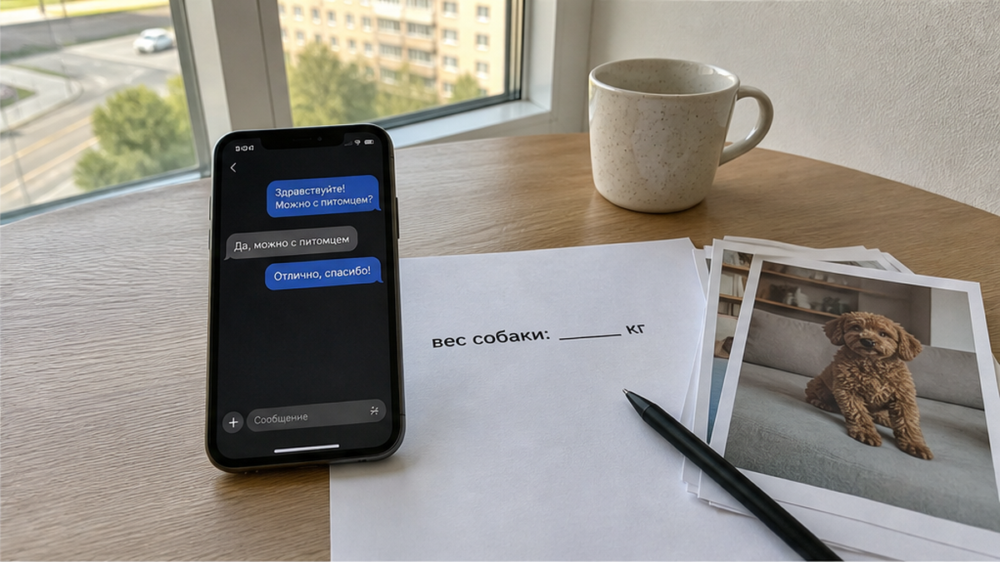

«С собакой можно», — написали в чате. На этом разговор и закончился. Вы бронируете квартиру на две ночи, платите за проживание около 6 800 ₽, приезжаете в Тюмень с собакой на поводке — и уже у двери слышите: «У вас крупная порода». Следом — доплата 3 000 ₽. Или предложение удвоить залог «за шерсть». До порога никто не назвал ни сумму, ни правило, ни момент оплаты. А теперь у вас сумка в одной руке, поводок в другой и выбор без хороших вариантов: платить или ночью искать жильё в незнакомом городе.
Горит здесь не сама доплата за животное. Хост вправе учитывать диван, уборку, химчистку, риск для следующего гостя. Горит другое: условие появляется тогда, когда отказаться дороже всего. В переписке было мягкое «можно с питомцем», а у двери выросли «крупная порода» и новый тариф. Не «можно с собакой». Не «по согласованию». А три тысячи у двери за «крупную породу».
Я хост посуточной в Тюмени. Это «Добрый дом». Случай выше — собирательный: типовой конфликт из чатов и отзывов, не история конкретной квартиры «Доброго дома». Живой разговор ведём в Telegram и MAX, отвечаю там сам.

Проблема в словах, у которых нет границы. «Небольшой питомец», «небольшая собачка», «по согласованию» — звучит спокойно, но цифр внутри нет. Для одного хоста небольшой пёс — до 5 килограммов. Для другого — до 10. Третий смотрит на высоту в холке, четвёртый — на породу, пятый вспоминает шерсть на диване после прошлого заезда. Пока правило не записано, каждый уверен, что понимает его правильно.
Поэтому вопрос нужно задавать не неловко, а прямо: сколько килограммов у вашей собаки — и кто решает, «крупная» она или нет: менеджер в чате или хост у двери? Если вам отвечают «разберёмся при заселении», решение уже отложено на момент, когда вы приехали и зависите от этой квартиры. Это не согласование. Это перенос цены на порог.
Выбирая жильё, вы сравниваете не только кровати, район и фотографии. Вы сравниваете полную стоимость поездки. Если плата за питомца спрятана за словом «можно», сравнения не получается. Одна квартира кажется дешевле соседней только до тех пор, пока у двери не появляется дополнительная сумма.
На рынке нет единого обязательного тарифа для животных, и это нормально. Где-то указывают лестницу: маленький питомец — 300 ₽ в сутки, средний — 500 ₽, крупный — 1 000 ₽, плюс залог 3 000 ₽. Где-то берут разовую плату за заезд: встречаются суммы от 500 до 4 000 ₽. Бывает 600–1 500 ₽ за период проживания, бывает отдельная плата за питомца и страховой депозит. Встречаются и условия с 1 500 ₽ в сутки и залогом 5 000 ₽ сверху. Это не единый стандарт и не обязательное правило для каждого объекта.
Важно не то, высокая цена или низкая. Важно, когда вы её увидели. Лестница «300 / 500 / 1 000 + залог 3 000» может не понравиться, но она честная: вы знаете вес собаки, считаете сумму и до оплаты решаете, подходит ли квартира. А фраза «с питомцем можно» без продолжения оставляет главную часть сделки на потом.
Тюмень здесь не особый случай. «Квартиры посуточно Тюмень» ищут тысячами раз в месяц, а запрос про квартиру с собакой — заметно реже, несколькими сотнями. Часто вы сначала находите район, цену и даты, а про животное вспоминаете уже в переписке. Именно там одно короткое «можно» подменяет нормальную договорённость.
Галочка «С питомцами» на площадке означает только одно: животные в принципе не запрещены. Она не говорит, какие именно животные допустимы, сколько они весят, сколько стоит проживание и нужен ли отдельный залог. Формулировка «по согласованию» тоже не даёт ответа. Она означает, что вы ещё должны согласовать условия.
Инструменты для честного разговора есть у обеих сторон. Вы можете сразу написать породу и вес собаки в запросе на бронирование. Хост может заранее указать плату, залог и правила ответственности за ущерб. Но иногда гость не хочет спрашивать о деньгах, а хост не хочет отпугивать цифрой. В итоге оба приезжают к одной двери с разными ожиданиями.
Механика знакомая. В истории про доплату за третьего гостя у двери на пороге пересчитывали людей. Здесь пересчитывают килограммы. А когда гость верит рейтингу и словам в объявлении без разбора, он может увидеть на месте не те условия, которые представлял по карточке.
Нет. Так не заселяем. Если в переписке сказали, что с питомцем можно, а новую сумму назвали на лестничной площадке, это не работа с гостем, а засада. Условия по животному нужно проговаривать до перевода: есть ли питомец, его порода и вес, сколько стоит размещение, плата разовая или посуточная, какой залог и как он возвращается. Если конкретная квартира не подходит для собаки, сказать об этом надо сразу.
Но честность работает в обе стороны. «Небольшая собачка» в чате и большой пёс на пороге — такая же подмена, только зеркальная. Хост думает не только о деньгах: есть мебель, уборка и следующий гость, у которого может быть аллергия. Слово вместо цифры ломает сделку одинаково для всех.
А вы считаете «можно с собакой» уже согласием или всё-таки спрашиваете вес, сумму и залог до оплаты? Если есть свой спорный случай — пишите в Telegram или MAX. Там можно показать формулировку из чата и разобрать её без гаданий.
Сначала проверка. Потом перевод.
После перевода деньги становятся якорем. До него у вас есть выбор между вариантами. После — конкретная дверь, дорога за плечами и условия, которые могут внезапно измениться. Та же схема видна в историях про предоплату без проверки условий и про залог, о котором подробно заговорили только на выезде. Сюжеты разные, но уязвимый момент один: важные цифры не были подтверждены заранее.
Слово «можно» не заменяет договорённость. Договорённость начинается там, где есть килограммы, рубли и понятный момент оплаты.
Перед переводом проверьте короткий список:
Пять вопросов занимают несколько минут. И стоят дешевле, чем неожиданные 3 000 ₽ у двери.
Квартиры посуточно в Тюмени: условия по животным обсуждаем до бронирования. Telegram: https://t.me/Dobriy_dom_72
MAX: https://max.ru/id660300569233_biz
Бронирование: https://добрыйдом-72.рф/booking/
Сайт: https://добрыйдом-72.рф/
Телефон: +7 (993) 574-83-22
Менеджер: https://t.me/Dobriy_dom_Tyumen